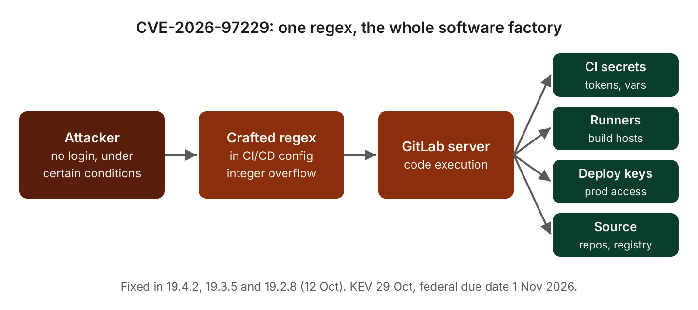

GitLab CI Regex RCE Is on CISA KEV: Treat CI Hosts as Production
CISA added CVE-2026-97229 to the Known Exploited Vulnerabilities catalog on 29 October 2026. The federal due date was 1 November 2026. That is a three day remediation window for agencies, which tells you how CISA ranked the risk.

According to the KEV entry, GitLab Community Edition and Enterprise Edition contain an integer overflow or wraparound issue that could allow an unauthenticated user to execute arbitrary code on the GitLab server via a specially crafted regular expression in a CI/CD configuration, due to insufficient regular expression validation.
GitLab had already fixed it on 12 October in its critical patch release: 19.4.2, 19.3.5 and 19.2.8. Affected: 19.2 before 19.2.8, 19.3 before 19.3.5, and 19.4 before 19.4.2, CVSS 10.0. GitLab.com is already patched and Dedicated customers need no action. If you run self managed, the patch was out 17 days before the KEV listing.
Read that again with a defender brain. The bug is not “someone needs a developer account and a merge request approved by three people.” Unauthenticated. CI/CD configuration path. Code execution on the GitLab server.
One honest caveat. GitLab’s CVE text says an unauthenticated user can do this “under certain conditions” and does not spell them out. Submitting CI configuration normally starts with having a project, so my working assumption is that instances where outsiders can get one are the most exposed: open sign up, public projects, or pipeline and lint endpoints reachable without strong auth. That is my inference, not GitLab’s statement. Treat every reachable instance as exposed until you confirm otherwise.
I am not walking through exploitation. Active exploitation is already the reason it is on KEV.
Why this one hits differently than a random web RCE
GitLab is often treated like a productivity app. It is not. It holds source, CI secrets, deploy keys, package registries, and frequently the credentials that push to production.
If an attacker lands RCE on the GitLab server, the prize is not a defaced landing page. The prize is the software factory: runners, tokens, artifact stores, and trust relationships into cloud accounts.
Teams that only patch “internet facing marketing sites” on an emergency clock will miss self hosted GitLab sitting on a flat internal network with weak segmentation. Internal does not mean safe when the vulnerability is unauthenticated and the service is reachable from places it should not be.
Concrete defender angle
Stop asking only “did we apply the GitLab update?” Ask:
- Which GitLab instances exist (prod, staging, forgotten acquisitions)?
- Who can reach the web UI and API without authentication from outside the trusted build network?
- What secrets live on that host or in its database that become worthless if the host was owned?
- Did anyone create suspicious CI configuration objects around the KEV window?
That last question is where a lot of orgs blank. If you do not log CI config changes and API traffic, you are flying without instruments.
On Omnibus installs, the logs that answer it live under /var/log/gitlab/: gitlab-rails/production_json.log and gitlab-rails/api_json.log for request paths, source IPs and status codes; gitlab-rails/audit_json.log for token, key and runner changes; sidekiq/current and the Puma logs for worker crashes. Pull them for 12 October onward before log rotation decides for you.
Detection guidance
Use what you already have.
Exposure
- Map every GitLab CE/EE endpoint. Include Geo secondaries and old restore targets.
- Check reverse proxies and zero trust policies. “Internal DNS only” is not a control if VPN pools are wide open.
Application and API telemetry
- Alert on unauthenticated spikes against CI related endpoints and config submission paths.
- Watch for unusual project or pipeline creation from unexpected source IPs.
- Flag CI config changes that introduce exotic regular expressions or large pattern payloads, especially outside normal engineering hours.
- Correlate GitLab errors or worker crashes with those change events. Overflow class bugs often leave availability fingerprints even when exploit attempts fail.
Host and identity
- Unexpected child processes from GitLab service accounts.
- New SSH keys, deploy tokens, personal access tokens, or runner registrations after the KEV date.
- Outbound connections from the GitLab host to unfamiliar destinations.
Pipeline abuse after possible RCE
- Jobs that export broad secret sets
- Runners joining from new hosts
- Artifact downloads by accounts that do not normally touch those projects
None of this requires a public PoC. It requires logging you should already want.
Mitigation that matches CI risk
- Upgrade every self managed instance to 19.4.2, 19.3.5 or 19.2.8 or later. Plan downtime on single node instances, since the release includes database migrations.
- If you cannot patch yet, restrict network access to the GitLab UI and API to jump hosts and trusted engineer networks only.
- Rotate CI/CD secrets, deploy tokens, runner tokens, and cloud credentials that GitLab could access, especially if exposure timeline is unclear.
- Review runner privileges. A compromised GitLab paired with privileged runners is a direct path into build and deploy systems.
- Separate production deploy credentials from routine CI where you can. Blast radius control still matters after patching.
For agencies, the 1 November 2026 due date already passed relative to this draft date. If you are still open on this CVE, you are outside the federal timeline and need an exception record plus compensating controls, not optimism.
How I would run the war room
Thirty minute agenda:
- Inventory owners confirm instance list and versions from the product itself
- Network team confirms exposure and temporary ACL options
- Platform team applies patches and restarts in a controlled order
- Detection engineering pushes temporary high fidelity alerts on CI config and token creation
- SecOps starts a compromise assessment focused on tokens, runners, and outbound traffic
Close the war room only when patches are verified and the compromise assessment has an owner with a due time.
Checklist
- Enumerate all GitLab CE/EE instances
- Confirm whether unauthenticated clients can reach them
- Upgrade to 19.4.2, 19.3.5 or 19.2.8 or later, and confirm the version from the instance itself
- Review CI config, API and token activity from 12 October onward, earlier if your logs reach
- Rotate high value secrets if integrity is uncertain
- Tighten runner and deploy credential scope
Your source control server is production infrastructure. Schedule it like production, monitor it like production, and patch it like an edge device when CISA says exploitation is live.
Sources
- GitLab: critical patch release 19.4.2, 19.3.5, 19.2.8
- CISA: CISA adds two known exploited vulnerabilities to catalog (29 Oct 2026)
- CISA KEV entry: CVE-2026-97229
- BleepingComputer: CISA says max severity GitLab flaw now exploited in the wild
- TechEnclave: GitLab 19.3.5 fixes a regression in its critical security patch
- Techstrong: GitLab CVSS 10 patch, upgrade and downtime notes